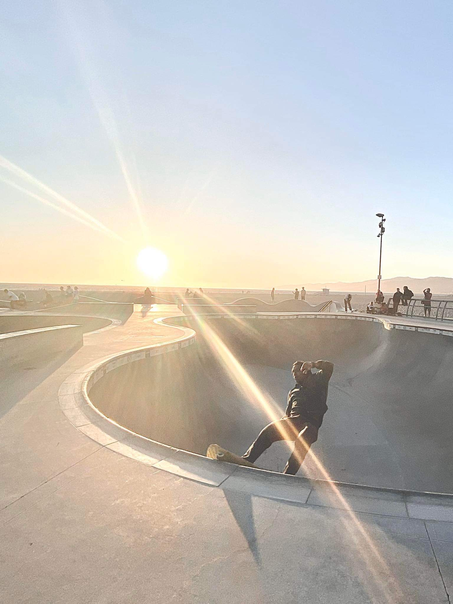
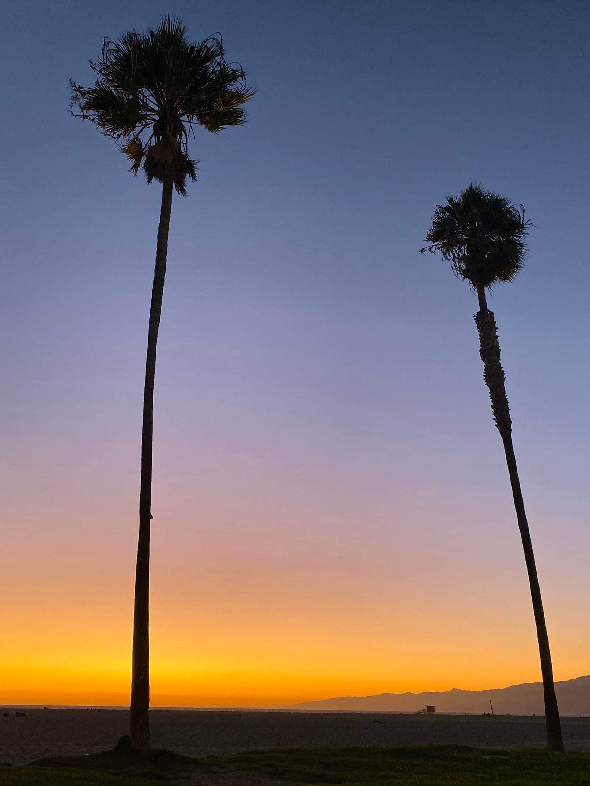
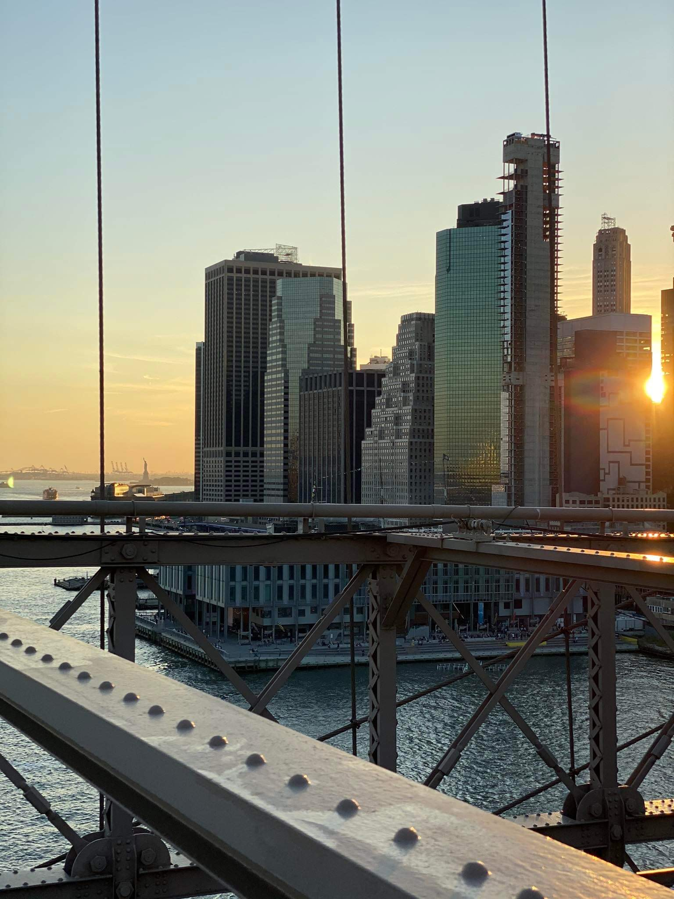
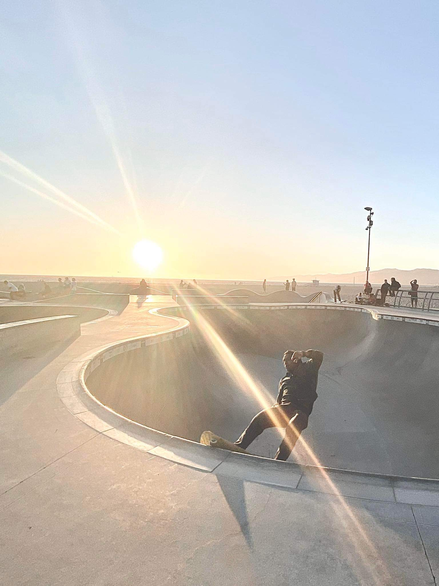
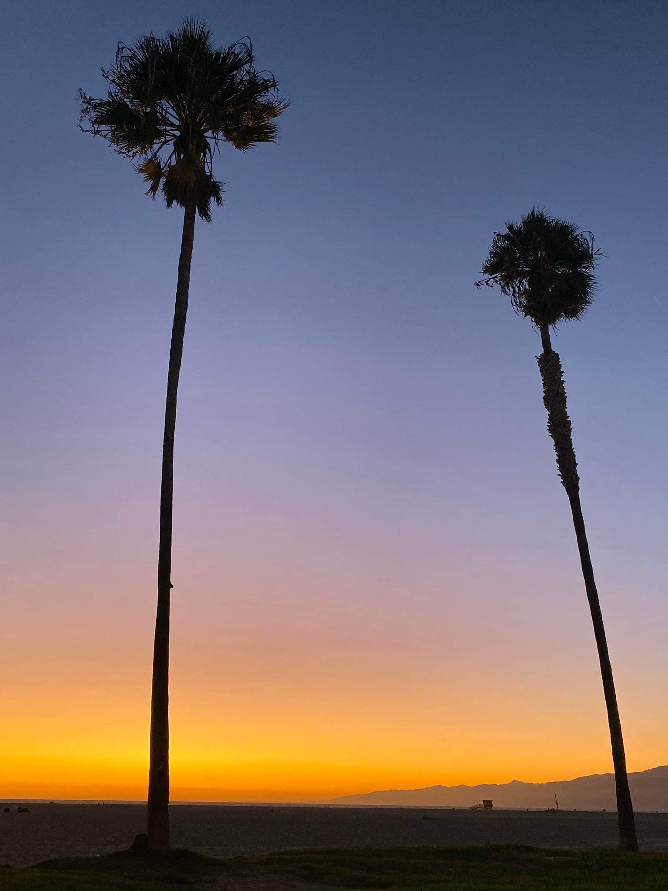
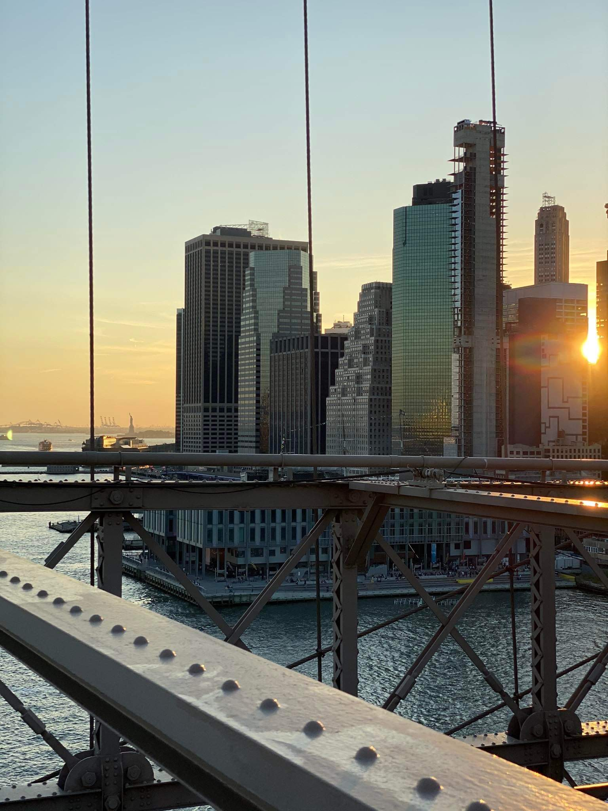

O mnie
Od dziecka moją największą pasją są podróże. Uwielbiam odkrywać nowe zakątki, ponieważ uważam, że nic tak nie rozwija i nie poszerza horyzontów jak zwiedzanie nieznanych mi dotąd miejsc. Tą stronę chciałabym poświęcić moim podróżniczym przygodom, aby móc utrwalać swoje wspomnienia. "Życie jest krótkie, a świat szeroki" to kiedyś zasłyszane słowa, które stały się moim motto życiowym. Być może zwrot ten jest dosyć trywialny, niemniej jednak, pomimo swojej prostoty, bardzo prawdziwy.
Oprócz podróżowania kocham też taniec i tym zajmuję się w wolnym czasie. W moich pasjach uwielbiam to jak bardzo się uzupełniają i to, że mogę się nimi wzajmenie inspirować. Obserwowanie kultury tańca w najrozmaitszych zakątkach globu przynosi mi szczególną radość. To po prostu niesamowite, że niezależnie od szerokości geograficznej, ludzie i tak odnajdują w tańcu wolność i szczęście.
Na mojej stronie chciałabym pokazać Ci kilka nprawdę pięknych miejsc, wywołać uśmiech na Twojej twarzy i kto wie, być może zachęcić Cię do wybrania się w podobną podróż :).
Kraje
| Kraj | Szwecja | Anglia | Hiszpania | Stany Zjednoczone |
| Stolica | Sztokholm | Londyn | Madryt | Waszyngton |
| Powierzchnia | 450 295 km² | 130 279 km² | 505 990 km² | 9 834 000 km² |
| Ludność | 10,35 mln | 55,98 mln | 47,35 mln | 329,5 mln |
Inspiracje
Przed zaplanowaniem podróży lubię zasigać inspiracji od ludzi, którzy podzielają moją pasję. Na internecie można znaleźć wiele blogów, profili w mediach społecznościowych, czy stron wypełnionych ciekawymi pomysłami na wyprawę. Moją ulubioną jest zdecydowanie strona Gdziekolwiek w świat.
Nieodzownym portalem w planowaniu podróży jest dla mnie także Skyscanner. Pozwala on na wyszukiwanie lotów do dowolnego miejsca na świecie, bardzo często w niezwykle korzystnych cenach.
Galeria

 




